Refonte UX/UI de digdash.com
DigDash est un éditeur français de solutions data et IA. Refonte de la navigation, de la structure des pages et de l'interface de son site, avec livraison des maquettes Figma à un développeur WordPress pour intégration. Les textes de contenu ont été fournis par le pôle communication au démarrage du projet : le travail porte sur la structure, la hiérarchie et l'interface.
Audit de l'existant
Points de blocage relevés avant toute maquette, dans l'ordre où le visiteur les rencontre.
- Deux barres de navigation empilées. 9 entrées de premier niveau se disputent l'attention.
- Niveaux de navigation confus. « Solutions » ne mène nulle part (lien vide) et contient « Secteurs » : 3 niveaux de profondeur.
- Le produit est invisible. Grande photo décorative en hero, aucun dashboard visible sur le premier écran.
- Lisibilité. Titres en capitales posés sur des photos, contraste variable selon l'image.
Arborescence
Les contenus sont reclassés selon l'intention du visiteur : comprendre l'offre, trouver son secteur, se renseigner, être accompagné.
Justification
- Loi de HickMoins d'options au premier niveau, décision plus rapide : 9 entrées → 5 + un CTA isolé.
- Modèle mentalRegroupement par besoin du visiteur : « Accompagnement » réunit tout ce qui répond à « j'ai besoin d'aide » (support, forum, formation, services).
- Information scentChaque entrée mène à une destination identifiable ; les secteurs deviennent visibles d'emblée. Fin du lien « Solutions » vide.
- ProfondeurMaximum 2 niveaux : toute page reste accessible sans sous-menus imbriqués.
Écrans clés
Comparaison avant / après, avec la règle de design qui justifie chaque choix.


Menu · justification
- Gestalt · proximitéUn panneau de présentation à gauche, les destinations à droite : la catégorie est comprise avant la lecture des liens.
- Loi de FittsZones de clic larges (icône + bloc de texte), bien plus faciles à viser que des liens serrés.
- LisibilitéPanneau plein et opaque : plus de texte qui passe sous un fond photo.
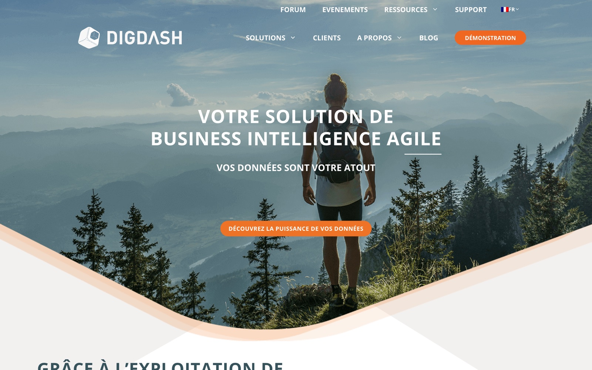

Accueil · justification
- Hiérarchie visuelleLecture en F : badge, titre, sous-titre, un seul CTA primaire orange. Le reste s'efface.
- Show, don't tellMontrer le dashboard réel plutôt qu'une photo d'ambiance : le produit est compris dès le premier écran.
- RéassuranceBadges et logos placés au-dessus de la ligne de flottaison : la preuve visuelle précède le défilement.
- ContrasteTexte blanc sur aplat bleu nuit, plus fiable que du texte sur photo (WCAG AA).
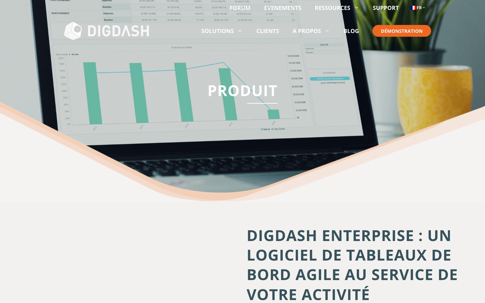

Produit · justification
- Fold utileUn bandeau décoratif gaspille l'écran le plus vu. Ici chaque zone du premier écran a une fonction.
- Hiérarchie des CTAUn bouton plein et un bouton contour : deux niveaux d'engagement, une seule action dominante.
- RéassuranceUn badge placé avant le titre signale la crédibilité avant toute lecture.
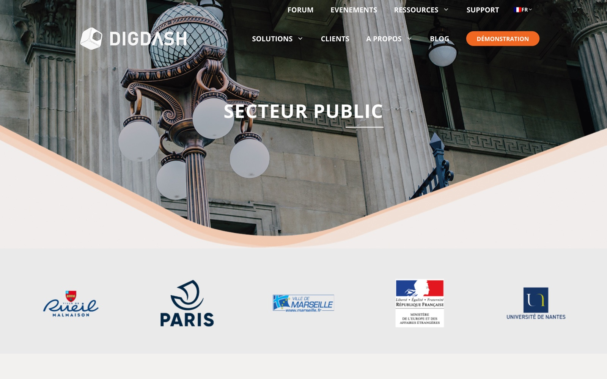

Secteur · justification
- HiérarchieTitre, badge et CTA forment un bloc lisible en un coup d'œil ; la photo devient un support, plus un fond.
- CohérenceUn gabarit réutilisable d'un secteur à l'autre : une fois la page comprise, elle se lit de la même façon partout (loi de Jakob).
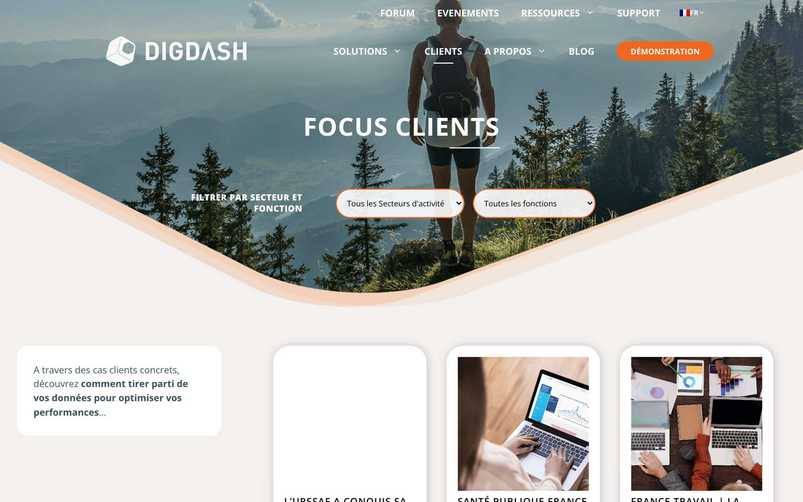

Clients · justification
- Reconnaissance > rappelLes puces montrent d'un coup d'œil toutes les options : plus besoin d'ouvrir une liste pour savoir ce qui existe.
- AffordanceUne puce se lit comme « cliquable », un select sur photo beaucoup moins.
- RéassuranceLogos en tête de liste : la page remplit son rôle de preuve visuelle.
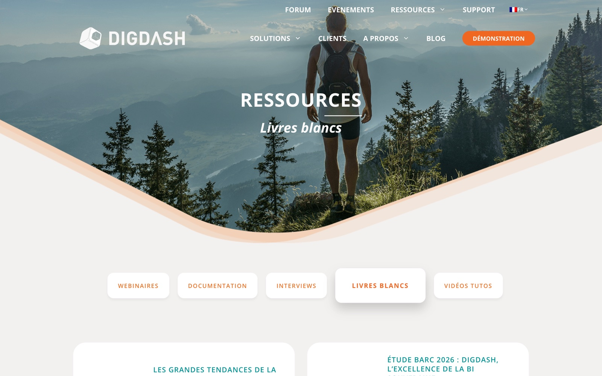
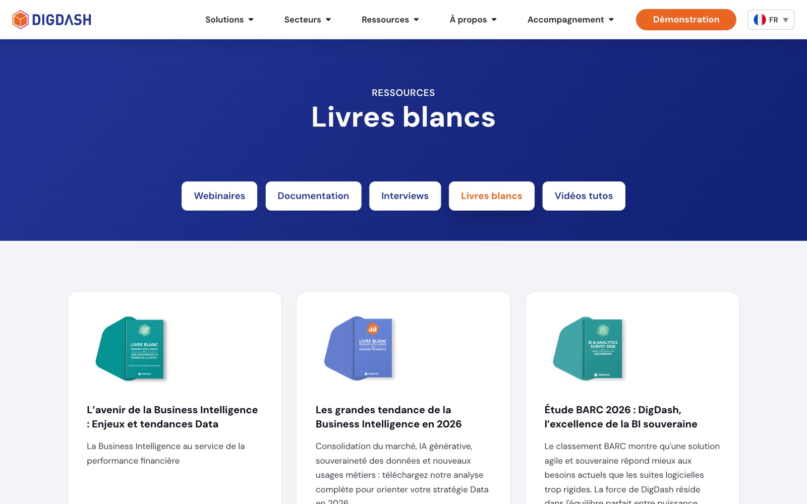
Ressources · justification
- Fold utileLes documents, raison d'être de la page, sont visibles sans défilement.
- État du systèmeL'onglet actif se distingue des autres : le visiteur sait où il se trouve parmi les cinq types de ressources.
- ReconnaissanceUne couverture par document permet de l'identifier avant d'ouvrir la fiche.
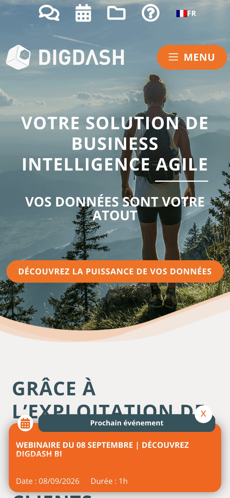
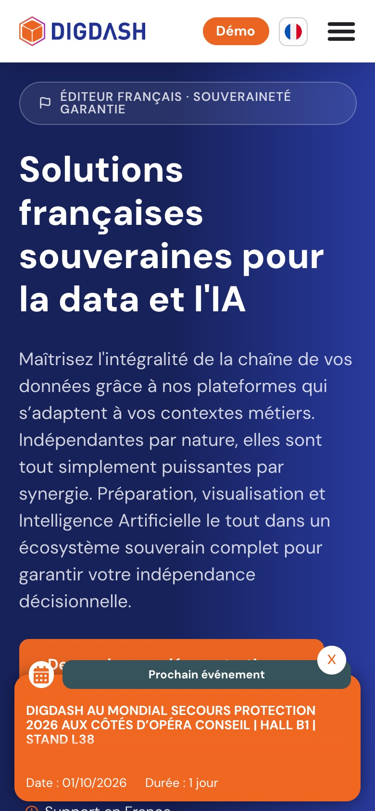
Mobile · justification
- Libellés > icônesUne icône seule est ambiguë : le texte « Démo » est conservé pour l'action clé.
- Loi de FittsLe CTA reste dans la zone de pouce, visible sans scroller.
- PrioritésLa navigation secondaire passe dans le burger ; le mobile ne garde que l'essentiel.
Autres pages
Le même traitement appliqué au reste du site.


Règle · reconnaissance > rappel

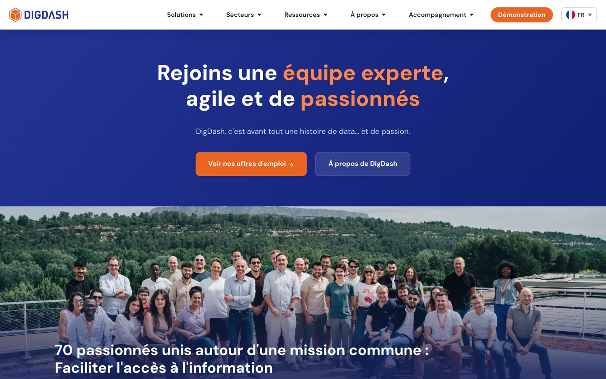
Règle · hiérarchie des actions
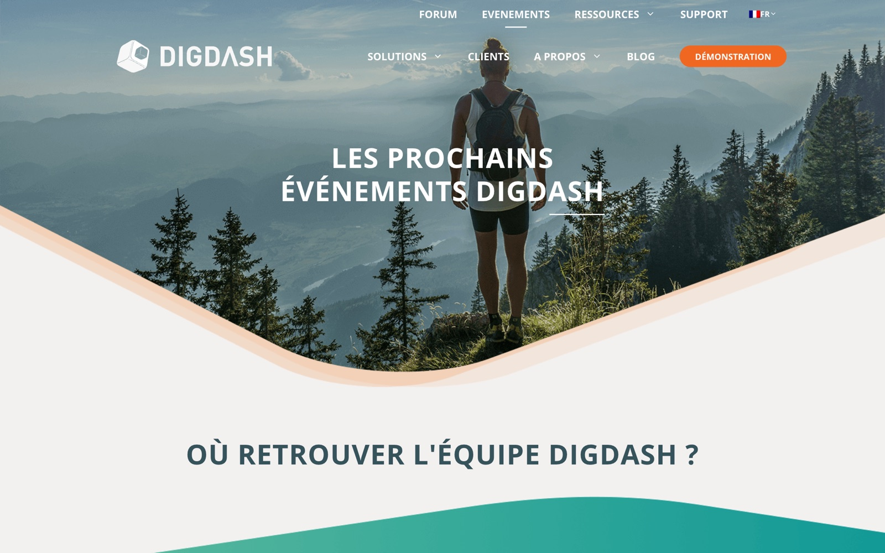
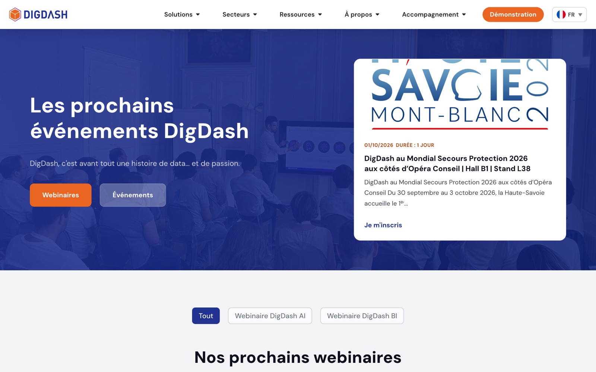
Règle · fold utile
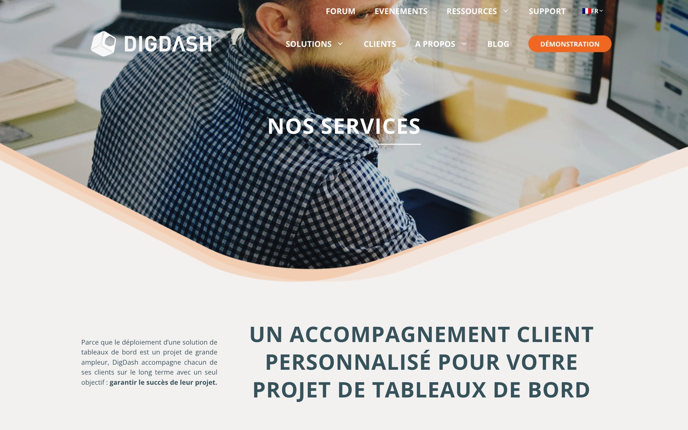

Règle · lisibilité et hiérarchie
Pistes d'amélioration
- Absence de tests post-livraison. Aucun test n'a été mené après la mise en ligne : les gains attendus (lisibilité, navigation, conversion) restent à valider auprès de vrais visiteurs.